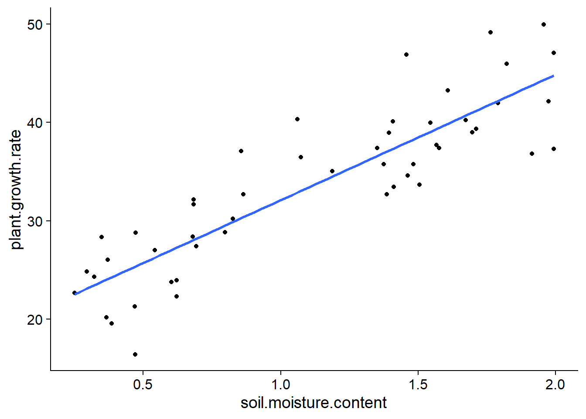
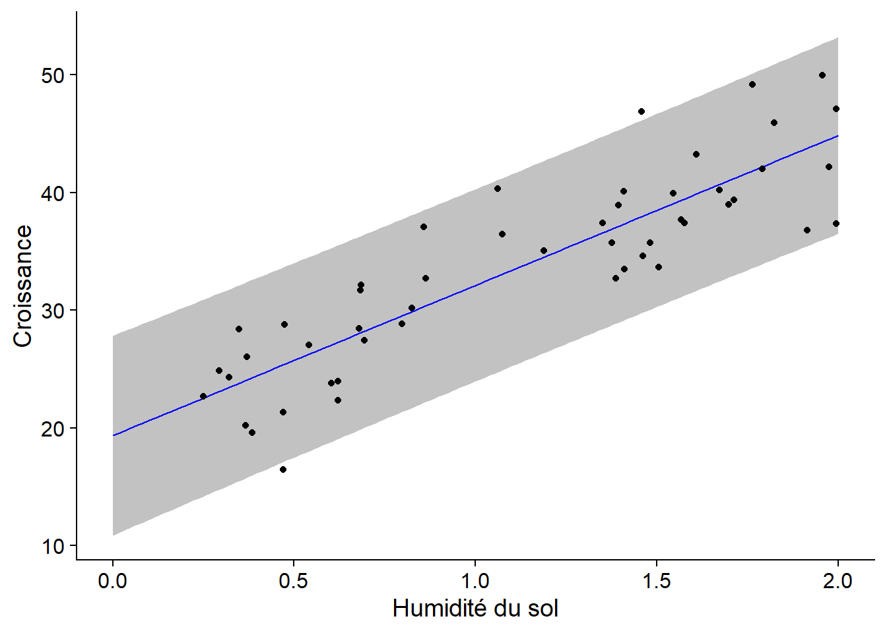
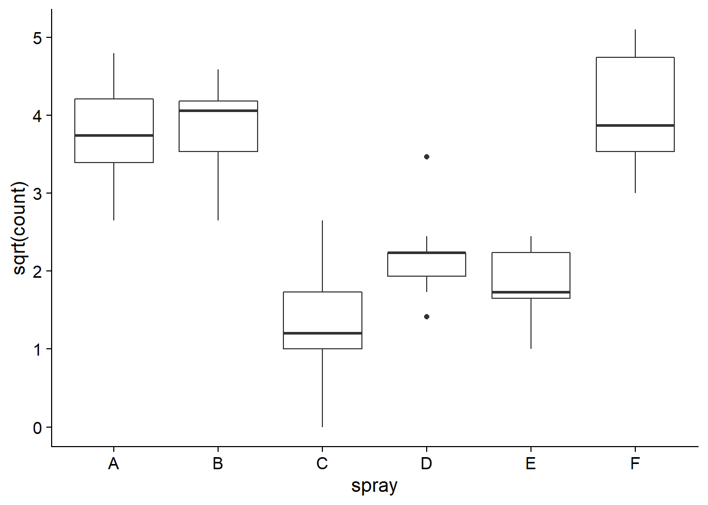

Régression linéaire simple
5 octobre 2020
Objectifs
Estimer et interpréter les paramètres d’une régression linéaire simple.
Vérifier les suppositions d’un modèle de régression à partir des graphiques de diagnostic.
Différencier l’intervalle de confiance d’une droite de régression et l’intervalle de prédiction de nouvelles observations.
Utiliser des contrastes pour représenter un prédicteur catégoriel dans un modèle de régression.
Régression: Vue d’ensemble
Les sept prochains cours porteront sur les modèles de régression. Ces modèles représentent la relation mathématique entre une variable réponse et une ou plusieurs variables nommées prédicteurs.
L’analyse de régression est notamment utile dans les cas suivants:
Analyser les résultats d’une expérience lorsqu’une ou plusieurs variables de traitement sont numériques (ex.: température, dose).
Séparer l’effet de traitements discrets (variables catégorielles) de celui d’autres conditions expérimentales représentées par des variables numériques. Dans ce contexte, on parle souvent d’analyse de la covariance.
Déterminer l’importance des associations entre des variables mesurées dans la nature (sans supposer de lien de causalité).
Utiliser les associations entre prédicteurs et réponse afin de prédire la valeur de cette dernière pour de nouvelles observations.
Le modèle mathématique demeure le même pour toutes ces situations, elles diffèrent donc dans l’interprétation et l’utilisation des résultats.
Régression linéaire simple
L’équation suivante décrit un modèle linéaire pour la relation entre un prédicteur numérique \(x\) et une réponse numérique \(y\). Puisqu’il n’y a qu’un seul prédicteur, il s’agit d’une régression linéaire simple.
\[y = \beta_0 + \beta_1 x + \epsilon\]
\(\beta_0\) et \(\beta_1\) sont les coefficients de la régression qui seront estimés à partir des données, tandis que \(\epsilon\) est le résidu aléatoire qui suit une distribution normale autour de zéro: \(N(0, \sigma)\).
De façon équivalente, le modèle indique que pour une valeur de \(x\) donnée, la réponse \(y\) suit une distribution normale de moyenne \(\mu = \beta_0 + \beta_1 x\) et d’écart-type \(\sigma\):
\[y \sim N(\beta_0 + \beta_1 x, \sigma)\]
L’ordonnée à l’origine \(\beta_0\) est la valeur moyenne de \(y\) lorsque \(x = 0\), tandis que la pente \(\beta_1\) est la différence moyenne de \(y\) entre deux observations qui diffèrent d’une unité de \(x\).
Méthode des moindres carrés
La méthode des moindres carrés permet d’obtenir les estimés des coefficients d’une régression linéaire.
Exemple
Le tableau de données plant_growth_rate.csv (tiré du livre de Beckerman, Childs et Petchey, Getting Started with R, An Introduction for Biologists) contient des mesures de croissance d’une plante en fonction de l’humidité du sol.
pgr <- read.csv("../donnees/plant_growth_rate.csv")
str(pgr)## 'data.frame': 50 obs. of 2 variables:
## $ soil.moisture.content: num 0.47 0.541 1.698 0.826 0.857 ...
## $ plant.growth.rate : num 21.3 27 39 30.2 37.1 ...Graphiquement, l’estimation des coefficients de la régression linéaire consiste à trouver la droite qui passe le plus “près” des points du graphique de \(y\) vs. \(x\).
ggplot(pgr, aes(x = soil.moisture.content, y = plant.growth.rate)) +
geom_point() +
geom_smooth(method = "lm", se = FALSE)## `geom_smooth()` using formula 'y ~ x'
Plus précisément, il est possible de démontrer que les meilleurs estimateurs sans biais des paramètres de la régression linéaire sont ceux qui minimisent la somme du carré des résidus.
Pour une série de \(n\) observations de \(x\) et \(y\), cette somme du carré des résidus correspond à:
\[ \sum_{k = 1}^n \epsilon_k^2 = \sum_{k = 1}^n (y_k - (\beta_0 + \beta_1 x_k))^2 \]
Les estimés \(\hat{\beta_0}\) et \(\hat{\beta_1}\) qui minimisent cette somme sont obtenus à partir du calcul différentiel. (Il s’agit des valeurs pour lesquelles les dérivées partielles de la somme en fonction de chaque coefficient sont égales à zéro.)
L’estimateur de la pente \(\beta_1\) est égal à la covariance de \(x\) et \(y\) divisée par la variance de \(x\):
\[\hat{\beta_1} = \frac{\sum_{k = 1}^n (x_k - \bar{x})(y_k - \bar{y})}{\sum_{k = 1}^n (x_k - \bar{x})^2}\]
Ici, \(\bar{x}\) et \(\bar{y}\) représentent les moyennes de \(x\) et \(y\), respectivement, pour l’ensemble des observations.
L’estimateur de l’ordonnée à l’origine \(\beta_0\) est égal à:
\[\hat{\beta_0} = \bar{y} - \hat{\beta_1} \bar{x}\]
Notez qu’en réarrangeant les termes de cette dernière équation:
\[\bar{y} = \hat{\beta_0} + \hat{\beta_1} \bar{x}\]
on constate que la droite de régression estimée passe par le point \((\bar{x}, \bar{y})\), le “centre de gravité” du nuage de points de \(x\) et \(y\).
Interprétations des résultats
La fonction lm permet d’estimer les paramètres d’une régression linéaire dans R. Comme pour aov, cette fonction accepte une formule du type réponse ~ prédicteur, ainsi qu’un argument data spécifiant le tableau de données. En effectuant la régression pour l’exemple ci-dessus, nous obtenons:
mod <- lm(plant.growth.rate ~ soil.moisture.content, data = pgr)
summary(mod)##
## Call:
## lm(formula = plant.growth.rate ~ soil.moisture.content, data = pgr)
##
## Residuals:
## Min 1Q Median 3Q Max
## -8.9089 -3.0747 0.2261 2.6567 8.9406
##
## Coefficients:
## Estimate Std. Error t value Pr(>|t|)
## (Intercept) 19.348 1.283 15.08 <2e-16 ***
## soil.moisture.content 12.750 1.021 12.49 <2e-16 ***
## ---
## Signif. codes: 0 '***' 0.001 '**' 0.01 '*' 0.05 '.' 0.1 ' ' 1
##
## Residual standard error: 4.019 on 48 degrees of freedom
## Multiple R-squared: 0.7648, Adjusted R-squared: 0.7599
## F-statistic: 156.1 on 1 and 48 DF, p-value: < 2.2e-16Le tableau des coefficients inclut l’ordonnée à l’origine (Intercept) et l’effet de chaque prédicteur. Si les suppositions du modèle sont respectées (voir section plus bas), chaque estimé \(\hat{\beta}\) suit une distribution normale qui a pour moyenne la valeur du paramètre \(\beta\), avec l’erreur-type indiquée dans le tableau. Ceci permet d’effectuer un test \(t\) pour l’hypothèse nulle \(\beta = 0\), avec une valeur \(p\) indiquée dans la dernière colonne.
Ici, l’ordonnée à l’origine indique que pour une valeur d’humidité de 0, la croissance moyenne est de 19.35 unités et qu’elle augmente de 12.75 unités pour chaque augmentation d’une unité de l’humidité.
Sous le tableau, Residual standard error correspond à l’écart-type des résidus du modèle, calculé avec 48 degrés de liberté (50 observations - 2 paramètres estimés).
sqrt(sum(mod$residuals^2) / 48)## [1] 4.019094L’avant-dernière ligne présente le coefficient de détermination \(R^2\) donc nous discuterons plus en détail ci-dessous.
La dernière ligne du sommaire est un test \(F\) semblable à l’ANOVA. Lorsque nous n’avons qu’un seul prédicteur, ce test donne la même information que le test \(t\) pour ce prédicteur: la probabilité d’obtenir un effet estimé aussi loin de 0 si l’effet réel du prédicteur est 0.
Les intervalles de confiance des coefficients ne sont pas affichés dans le sommaire, mais nous pouvons les calculer avec la fonction confint.
confint(mod)## 2.5 % 97.5 %
## (Intercept) 16.76833 21.92859
## soil.moisture.content 10.69764 14.80144Coefficient de détermination
Le coefficient de détermination \(R^2\) représente la fraction de la variance expliquée par le modèle.
\[R^2 = 1 - \frac{\sum_{k=1}^n (y_k - \hat{y_k})^2}{\sum_{k=1}^n (y_k - \bar{y})^2}\]
Dans le deuxième terme, \(\hat{y_k} = \hat{\beta_0} + \hat{\beta_1} x_k\) est la valeur attendue (moyenne) pour \(y_k\) selon le modèle. Ainsi, le numérateur est la somme des carrés des résidus, tandis que le dénominateur représente la somme des écarts carrés entre chaque observation de \(y\) et la moyenne de \(y\). Le deuxième terme représente donc la fraction de la variance totale de \(y\) qui n’est pas expliquée par le modèle; en le soustrayant de 1, on obtient la fraction de la variance expliquée.
Les valeurs attendues \(\hat{y_k}\) sont enregistrées dans l’élément fitted.values du résultat de lm (ex.: mod$fitted.values), tandis que les résidus sont enregistrés dans l’élément residuals.
Nous pouvons vérifier que le \(R^2\) calculé manuellement correspond au résultat rapporté ci-dessus.
r2 <- 1 - sum(mod$residuals^2) / sum((pgr$plant.growth.rate - mean(pgr$plant.growth.rate))^2)
r2## [1] 0.764796Pour une régression linéaire simple, la racine carrée de \(R^2\) est égale à la corrélation entre \(x\) et \(y\).
cor(pgr$soil.moisture.content, pgr$plant.growth.rate) ## [1] 0.8745262sqrt(r2)## [1] 0.8745262Notez qu’il y a deux valeurs du \(R^2\) dans le sommaire d’un modèle linéaire. La valeur Multiple R-squared correspond au coefficient de détermination \(R^2\) défini plus tôt. La valeur Adjusted R-squared a une définition légèrement différente; elle est basée sur la ratio entre la variance des résidus et la variance totale, plutôt que le ratio des sommes des écarts carrés.
r2_adj <- 1 - (sum(mod$residuals^2)/48) / var(pgr$plant.growth.rate)
r2_adj## [1] 0.759896Puisque la variance des résidus est calculée avec \(n - k\) degrés de liberté, où \(k\) est le nombre de paramètres estimés, le \(R^2\) ajusté est inférieur au \(R^2\) non-ajusté et cette différence est plus importante lorsque le modèle comprend plus de paramètres (voir la régression linéaire multiple au prochain cours).
Dans le cours sur les tests d’hypothèse, il était recommandé de présenter trois types de résultats suite à un test:
- la probabilité que l’effet mesuré soit dû au hasard (valeur \(p\));
- l’estimé et l’intervalle de confiance de l’effet mesuré; et
- la magnitude de l’effet comparée à la variance des données individuelles.
Le coefficient de détermination \(R^2\) répond à la troisième question: Quelle partie de la variation observée est due à l’effet des traitements ou prédicteurs mesurés?
Finalement, un rappel: quand on parle de l’effet d’un prédicteur ou de la fraction de la variance expliquée, cela ne signifie pas toujours qu’il existe une relation de cause à effet entre le prédicteur et la réponse. Notre capacité à interpréter une association statistique (ou une corrélation) comme représentant un lien de cause à effet ne dépend pas de la magnitude de l’effet, mais plutôt des contrôles établis lors du plan expérimental: variation indépendante des facteurs, utilisation d’un groupe témoin, assignation aléatoire des traitements, etc.
Intervalle de confiance et intervalle de prédiction
Pour afficher la droite de régression entre \(x\) et \(y\) avec son intervalle de confiance, nous pouvons utiliser la fonction geom_smooth du package ggplot2, avec la méthode lm (modèle linéaire).
ggplot(pgr, aes(x = soil.moisture.content, y = plant.growth.rate)) +
geom_point() +
geom_smooth(method = "lm")## `geom_smooth()` using formula 'y ~ x'
À chaque valeur de \(x\), la surface grise donne un intervalle de confiance pour la valeur moyenne de \(y\) selon le modèle linéaire. Par défaut, il s’agit d’un intervalle à 95%, mais ce seuil peut être modifié avec l’argument level de geom_smooth.
Notez que l’intervalle de confiance devient plus large aux extrémités du graphique. Rappelez-vous que la droite de régression doit passer par le point \((\bar{x}, \bar{y})\), donc l’incertitude sur la pente fait “pivoter” la droite légèrement autour de ce point, ce qui génère une incertitude plus grande aux extrémités.
Supposons qu’en plus d’estimer la tendance moyenne entre \(x\) et \(y\), nous voulons prédire la valeur de \(y\) pour de nouvelles observations, en ne connaissant que la valeur de \(x\). Dans le code ci-dessous, nous créons un nouveau tableau de données pgr_nouv avec 101 valeurs de l’humidité du sol, puis nous appelons la fonction predict pour obtenir les prédiction de croissance selon le modèle mod, avec un intervalle de prédiction. Nous rattachons ensuite ces colonnes à pgr_nouv avec cbind.
pgr_nouv <- data.frame(soil.moisture.content = seq(0, 2, 0.02))
pgr_pred <- predict(mod, pgr_nouv, interval = "prediction")
pgr_nouv <- cbind(pgr_nouv, pgr_pred)
str(pgr_nouv)## 'data.frame': 101 obs. of 4 variables:
## $ soil.moisture.content: num 0 0.02 0.04 0.06 0.08 0.1 0.12 0.14 0.16 0.18 ...
## $ fit : num 19.3 19.6 19.9 20.1 20.4 ...
## $ lwr : num 10.9 11.1 11.4 11.7 11.9 ...
## $ upr : num 27.8 28.1 28.3 28.6 28.8 ...La colonne fit contient les valeurs prédites (qui correspondent aux points sur la droite de régression) tandis que lwr et upr sont les limites inférieure et supérieure de l’intervalle de prédiction à 95%.
Superposons maintenant la droite de régression, l’intervalle de prédiction (avec geom_ribbon) et le nuage de points:
ggplot(pgr_nouv, aes(x = soil.moisture.content)) +
labs(x = "Humidité du sol", y = "Croissance") +
geom_ribbon(aes(ymin = lwr, ymax = upr), alpha = 0.3) +
geom_line(aes(y = fit), color = "blue") +
geom_point(data = pgr, aes(y = plant.growth.rate))
Contrairement à l’intervalle de confiance qui représente l’incertitude sur la valeur moyenne de la réponse pour une certaine valeur du prédicteur, l’intervalle de prédiction représente l’incertitude sur la valeur de la réponse pour une observation individuelle. Ainsi, on s’attend à ce qu’environ 95% des points se retrouvent dans l’intervalle de prédiction, ce qui est le cas ici (48/50).
Note: Il n’est pas prudent d’utiliser le résultat d’une régression pour prédire la réponse pour des valeurs des prédicteurs hors de la plage des valeurs avec lesquelles le modèle a été estimé (dans l’exemple, pour des valeurs d’humidité > 2). Ces extrapolations sont moins fiables que les prédictions à l’intérieur de la plage des valeurs observées (interpolation). En particulier, une relation approximativement linéaire sur une échelle restreinte de valeurs de \(x\) peut devenir fortement non-linéaire lorsqu’on change d’échelle. Pour cette même raison, si les valeurs observées de \(x\) sont loin de 0, il est préférable de ne pas essayer d’interpréter l’ordonnée à l’origine.
Suppositions du modèle de régression linéaire
Comme pour l’ANOVA, le modèle de régression linéaire suppose que les résidus sont:
- indépendants et
- normalement distribués
- avec la même variance.
En plus:
- la relation entre la réponse moyenne et les prédicteurs est linéaire, et
- les prédicteurs sont mesurés sans erreur (ou cette erreur est négligeable par rapport aux autres erreurs du modèles).
Linéarité
Le critère de linéarité est moins contraignant qu’il n’y parait à prime abord. Les transformations de variables permettent de convertir une relation non-linéaire en relation linéaire. Par exemple, si \(y\) est la fonction d’une puissance à déterminer de \(x\):
\[ y = a x^b \]
alors en prenant le logarithme de chaque côté de l’équation, on obtient une relation linéaire:
\[ \log(y) = \log(a) + b \log(x) \]
En général, l’équation reliant \(x\) et \(y\) peut contenir des fonctions non-linéaires de \(x\), en autant qu’elle soit une fonction linéaire des coefficients. Par exemple, l’équation quadratrique:
\[ y = \beta_0 + \beta_1 x + \beta_2 x^2 \]
constitue un exemple de modèle linéaire; il s’agit d’une régression linéaire multiple, puisqu’on a deux prédicteurs, \(x\) et \(x^2\).
Indépendance des résidus
L’indépendance des résidus signifie que la portion des observations \(y\) non-expliquée par les prédicteurs \(x\) est indépendante d’une observation à l’autre.
En écologie, la non-indépendance des résidus est souvent due à une proximité de certaines observations dans l’espace et dans le temps. Par exemple, si les observations s’étalent sur plusieurs journées, les observations plus rapprochées dans le temps pourraient être plus semblables. On peut inclure dans le modèle les facteurs pouvant causer cette dépendance temporelle (ex.: météo) pour obtenir les résidus les plus indépendants possibles. Aussi, si on effectue des mesures répétées sur les mêmes unités d’observation à travers le temps et que le modèle ne tient pas compte de cette réalité, alors les résidus risquent d’être plus semblables entre observations prises sur la même unité et donc non-indépendants.
La non-indépendance des résidus ne biaise pas les estimés des coefficients du modèle, donc ceux-ci demeurent valides, mais leur incertitude sera sous-estimée. (On pourrait dire qu’un échantillon de mesures non-indépendantes est équivalent à un échantillon indépendant de plus petite taille.) Ainsi, les intervalles de confiance et les tests d’hypothèse sur la significativité des coefficients ne seront pas valides.
Égalité des variances
L’égalité des variances (homoscédasticité) est aussi nécessaire pour que les intervalles de confiance et les valeurs \(p\) rapportées pour les coefficients soient exacts.
Normalité
Comme pour le test \(t\) et l’ANOVA, les coefficients estimés par la régression linéaire et leurs intervalles de confiance ne sont pas trop affectés par la non-normalité des résidus individuels; en raison du théorème de la limite centrale, la distribution de ces estimés s’approche plus de la normale que celle des résidus individuels.
La non-normalité des résidus affecte davantage la précision des prédictions du modèle. En particulier, si les résidus comportent plus de valeurs extrêmes qu’une distribution normale, la largeur des intervalles de prédiction sera sous-estimée.
Graphiques de diagnostic
Voici les quatre graphiques de diagnostic obtenus avec la fonction plot appliquée au résultat de lm.

Les deux premiers graphiques correspondent à ceux déjà vus avec l’ANOVA. Pour le graphique des résidus vs. valeurs attendues (residuals vs. fitted), il faut faire particulièrement attention aux points suivants:
Les résidus doivent être dispersés aléatoirement autour de zéro. La présence d’une tendance (linéaire ou non) indique des effets systématiques ignorés par le modèle. Dans ce cas-ci, il est possible que nous ayons une légère tendance non-linéaire (quadratique) dans les résidus.
La variance des résidus doit être approximativement constante (homoscédasticité). Un type courant d’hétéroscédasticité survient lorsque la variance augmente avec la moyenne. Dans ce cas, le graphique des résidus vs. valeurs attendues a une forme d’entonnoir (la dispersion des points augmente le long de l’axe des \(x\)).
Le diagramme quantile-quantile permet de détecter des déviations systématiques de la normalité des résidus.
Le troisième graphique montre l’échelle des résidus (en valeur absolue) en fonction des valeurs attendues de \(y\). Ce graphique devrait aussi montrer une tendance si la variance n’est pas constante.
Effet de levier
Le dernier graphique montre l’effet de levier (leverage) des observations relativement à la valeur des résidus. Une observation avec un fort effet de levier a une plus grande influence sur les coefficients de la régression; cela se produit le plus souvent dans le cas d’observations isolées et loin de la moyenne des prédicteurs. Une observation éloignée de la moyenne (résidu positif ou négatif important) qui a aussi un fort effet de levier risque d’éloigner la droite de régression de la tendance générale indiquée par les autres données.
La distance de Cook (Cook’s distance) \(D\) est une mesure combinant l’effet de levier et la magnitude du résidu. Les droites pointillées sur le quatrième graphique permettent d’identifier les points problématiques qui dépassent une certaine valeur de \(D\), généralement \(D > 1\). Dans notre exemple précédent, aucun point n’a une grande influence, donc ces lignes pointillées se retrouvent en dehors de la partie visible du graphique.
Prédicteur catégoriel et contrastes
Lien entre ANOVA et régression linéaire
Dans cette section, nous verrons comment le modèle d’ANOVA à un facteur peut être présenté comme une régression linéaire. Nous utiliserons le jeu de données InsectSprays qui contient des mesures de comptages d’insectes (count) à la suite de l’application de différents insecticides (spray). Comme nous avons vu au dernier cours, il est utile d’appliquer une transformation racine carrée (sqrt) aux données de comptages pour que la variance de la réponse soit plus semblable entre les traitements.
ggplot(InsectSprays, aes(x = spray, y = sqrt(count))) +
geom_boxplot()
Voici les résultats de l’ANOVA réalisée avec la fonction aov, tel que vu au dernier cours.
spray_aov <- aov(sqrt(count) ~ spray, InsectSprays)
summary(spray_aov)## Df Sum Sq Mean Sq F value Pr(>F)
## spray 5 88.44 17.688 44.8 <2e-16 ***
## Residuals 66 26.06 0.395
## ---
## Signif. codes: 0 '***' 0.001 '**' 0.01 '*' 0.05 '.' 0.1 ' ' 1Ajustons maintenant le même modèle avec la fonction lm.
spray_lm <- lm(sqrt(count) ~ spray, InsectSprays)
summary(spray_lm)##
## Call:
## lm(formula = sqrt(count) ~ spray, data = InsectSprays)
##
## Residuals:
## Min 1Q Median 3Q Max
## -1.24486 -0.39970 -0.01902 0.42661 1.40089
##
## Coefficients:
## Estimate Std. Error t value Pr(>|t|)
## (Intercept) 3.7607 0.1814 20.733 < 2e-16 ***
## sprayB 0.1160 0.2565 0.452 0.653
## sprayC -2.5158 0.2565 -9.807 1.64e-14 ***
## sprayD -1.5963 0.2565 -6.223 3.80e-08 ***
## sprayE -1.9512 0.2565 -7.606 1.34e-10 ***
## sprayF 0.2579 0.2565 1.006 0.318
## ---
## Signif. codes: 0 '***' 0.001 '**' 0.01 '*' 0.05 '.' 0.1 ' ' 1
##
## Residual standard error: 0.6283 on 66 degrees of freedom
## Multiple R-squared: 0.7724, Adjusted R-squared: 0.7552
## F-statistic: 44.8 on 5 and 66 DF, p-value: < 2.2e-16Remarquez d’abord que certains éléments se retrouvent dans les deux sommaires. La statistique \(F\) rapportée est la même et en prenant le carré de l’écart-type des résidus (Residual standard error), nous retrouvons la moyenne des carrés des résidus (MSE) de l’ANOVA.
0.6283^2## [1] 0.3947609Le tableau de résultats pour lm met davantage l’accent sur l’estimation des effets de chaque traitement (dans la section Coefficients). Comme nous avons discuté brièvement au cours précédent, (Intercept) désigne ici la réponse moyenne pour le premier traitement (A), tandis que les coefficients suivants sprayB à sprayF indiquent les différences entre la réponse moyenne de chaque autre traitement et celle du traitement A. Dans la section suivante, nous expliquerons davantage pourquoi les résultats sont présentés ainsi.
Le tableau présente aussi un test \(t\) pour évaluer la significativité de chaque différence. Notez que contrairement au test des étendues de Tukey vu au dernier cours, les valeurs \(p\) rapportées ne sont pas corrigées pour tenir compte des comparaisons multiples. Aussi, il ne s’agit pas de toutes les comparaisons possibles (toutes les paires de traitement), mais seulement les comparaisons entre le traitement A et chacun des autres traitement.
Nous pouvons retrouver le tableau d’ANOVA correspondant à un modèle linéaire avec la fonction anova.
anova(spray_lm)## Analysis of Variance Table
##
## Response: sqrt(count)
## Df Sum Sq Mean Sq F value Pr(>F)
## spray 5 88.438 17.6876 44.799 < 2.2e-16 ***
## Residuals 66 26.058 0.3948
## ---
## Signif. codes: 0 '***' 0.001 '**' 0.01 '*' 0.05 '.' 0.1 ' ' 1Codage d’une variable catégorielle
Imaginons une expérience avec un groupe témoin et deux traitements (\(T_1\) et \(T_2\)). Pour représenter ces données dans un modèle de régression, nous créons deux variables:
- \(T_1\) = 1 pour les observations qui ont reçu le traitement 1, 0 pour les autres.
- \(T_2\) = 1 pour les observations qui ont reçu le traitement 2, 0 pour les autres.
Nous obtenons donc le modèle: \(y = \beta_0 + \beta_1 T_1 + \beta_2 T_2 + \epsilon\)
En remplaçant les valeurs de \(T_1\) et \(T_2\), nous pouvons déterminer la moyenne de \(y\) pour chacun des groupes selon les coefficients \(\beta\):
- Groupe témoin (\(T_1 = 0, T_2 = 0\)): \(\mu_{tem} = \beta_0\)
- Traitement 1 (\(T_1 = 1, T_2 = 0\)): \(\mu_{tr1} = \beta_0 + \beta_1\)
- Traitement 2 (\(T_1 = 0, T_2 = 1\)): \(\mu_{tr2} = \beta_0 + \beta_2\)
L’ordonnée à l’origine correspond à la moyenne du groupe témoin tandis que les deux autres coefficients représentent la différence entre la moyenne de chaque traitement et celle du groupe témoin. Ce type de codage d’une variable catégorielle permet de comparer facilement chaque traitement à un traitement de référence. C’est le type de codage utilisé par défaut dans R, comme nous avons vu dans les résultats de la section précédente.
Contrastes
En statistiques, un contraste est une variable numérique définie à partir d’un variable catégorielle (ou facteur) qui représente une comparaison entre catégories.
Pour un facteur avec \(k\) catégories, on peut définir \(k - 1\) contrastes indépendants. Dans l’exemple précédent, les contrastes \(T_1\) et \(T_2\) servaient à comparer le traitement 1 au groupe témoin et le traitement 2 au groupe témoin. En connaissant ces deux différences, on connait aussi la différence entre les traitements 1 et 2, donc il serait redondant d’ajouter un troisième contraste.
Dans R, la fonction contrasts affiche la matrice des contrastes associés à un facteur.
contrasts(InsectSprays$spray)## B C D E F
## A 0 0 0 0 0
## B 1 0 0 0 0
## C 0 1 0 0 0
## D 0 0 1 0 0
## E 0 0 0 1 0
## F 0 0 0 0 1Les colonnes de cette matrice correspondent aux contrastes (B à F) qui prennent une valeur de 1 pour un des traitements et 0 pour les autres. Le traitement A est associé à un valeur 0 pour chacun des contrastes.
Dans le tableau de données InsectSprays, la variable spray n’est pas de type character, mais plutôt factor. Ce type de données permet en R de représenter une variable catégorielle avec un nombre restreint de valeurs (niveaux) possibles, obtenus avec levels.
class(InsectSprays$spray)## [1] "factor"levels(InsectSprays$spray)## [1] "A" "B" "C" "D" "E" "F"Tout vecteur de texte en R peut être converti en facteur avec la fonction as.factor. Par défaut, R place les niveaux en ordre alphabétique:
levels(as.factor(c("pomme", "orange", "banane")))## [1] "banane" "orange" "pomme"Pour un facteur existant, nous pouvons changer le niveau de référence (premier niveau) avec la fonction relevel, ce qui modifie aussi les contrastes créés à partir de ce facteur.
InsectSprays$spray <- relevel(InsectSprays$spray, ref = "F")
levels(InsectSprays$spray)## [1] "F" "A" "B" "C" "D" "E"contrasts(InsectSprays$spray)## A B C D E
## F 0 0 0 0 0
## A 1 0 0 0 0
## B 0 1 0 0 0
## C 0 0 1 0 0
## D 0 0 0 1 0
## E 0 0 0 0 1En ré-estimant le modèle linéaire avec ces nouveaux contrastes, on obtient des coefficients indiquant la différence entre le traitement F et chacun des autres.
spray_lm <- lm(sqrt(count) ~ spray, InsectSprays)
summary(spray_lm)##
## Call:
## lm(formula = sqrt(count) ~ spray, data = InsectSprays)
##
## Residuals:
## Min 1Q Median 3Q Max
## -1.24486 -0.39970 -0.01902 0.42661 1.40089
##
## Coefficients:
## Estimate Std. Error t value Pr(>|t|)
## (Intercept) 4.0186 0.1814 22.155 < 2e-16 ***
## sprayA -0.2579 0.2565 -1.006 0.318
## sprayB -0.1420 0.2565 -0.554 0.582
## sprayC -2.7738 0.2565 -10.813 2.98e-16 ***
## sprayD -1.8543 0.2565 -7.229 6.35e-10 ***
## sprayE -2.2092 0.2565 -8.612 2.13e-12 ***
## ---
## Signif. codes: 0 '***' 0.001 '**' 0.01 '*' 0.05 '.' 0.1 ' ' 1
##
## Residual standard error: 0.6283 on 66 degrees of freedom
## Multiple R-squared: 0.7724, Adjusted R-squared: 0.7552
## F-statistic: 44.8 on 5 and 66 DF, p-value: < 2.2e-16Notez que le changement de contrastes n’affecte que l’estimation des coefficients. La valeur du \(R^2\) et du test \(F\) sont les mêmes.
Modifier le type de contrastes
Le type de contrastes utilisé par défaut dans R compare chaque catégorie à une catégorie de référence. On dit qu’il s’agit d’un codage de traitement (contr.treatment dans R) car il est utile pour comparer des traitements à un groupe témoin. Puisque nous n’avons pas de groupe de référence pour le facteur spray, nous pourrions utiliser un autre type de contraste. Voici des contrastes de type contr.sum (codage d’effet) pour la même variable.
data(InsectSprays) # recharger le jeu de données InsectSprays
contrasts(InsectSprays$spray) <- "contr.sum"
contrasts(InsectSprays$spray)## [,1] [,2] [,3] [,4] [,5]
## A 1 0 0 0 0
## B 0 1 0 0 0
## C 0 0 1 0 0
## D 0 0 0 1 0
## E 0 0 0 0 1
## F -1 -1 -1 -1 -1Nous avons au préalable rechargé le jeu de données avec data afin d’annuler les modifications faites précédemment.
Pour plus facilement interpréter les résultats, nous pouvons assigner un nom aux variables de contraste.
colnames(contrasts(InsectSprays$spray)) <- c("A", "B", "C", "D", "E")
contrasts(InsectSprays$spray)## A B C D E
## A 1 0 0 0 0
## B 0 1 0 0 0
## C 0 0 1 0 0
## D 0 0 0 1 0
## E 0 0 0 0 1
## F -1 -1 -1 -1 -1Dans ce type de codage, chaque contraste prend la valeur de 1 pour une des catégories, sauf la dernière catégorie qui prend une valeur de -1 pour tous les contrastes. Une propriété importante de ces contrastes est que la somme de chaque colonne est zéro, ce qui signifie que la moyenne de chaque contraste sur l’ensemble des catégories est zéro.
Au sens strict utilisé en statistiques, une variable de contraste doit avoir une somme de zéro sur l’ensemble des catégories. Le codage de traitement utilisé par défaut dans R ne forme donc pas des vrais contrastes.
Reprenons le modèle de régression: \(y = \beta_0 + \beta_1 T_1 + \beta_2 T_2 + \epsilon\) avec le codage d’effet défini ci-dessus.
- Catégorie 1 (\(T_1 = 1, T_2 = 0\)): \(\mu_1 = \beta_0 + \beta_1\)
- Catégorie 2 (\(T_1 = 0, T_2 = 1\)): \(\mu_2 = \beta_0 + \beta_2\)
- Catégorie 3 (\(T_1 = -1, T_2 = -1\)): \(\mu_3 = \beta_0 - \beta_1 - \beta_2\)
- Moyenne générale: \(\mu = (\mu_1 + \mu_2 + \mu_3)/3 = \beta_0\)
L’ordonnée à l’origine correspond donc à la moyenne générale tandis que les coefficients correspondent à la différence entre la moyenne de chaque catégorie et la moyenne générale. L’effet de la dernière catégorie peut être déterminé en prenant l’opposé de la somme des autres effets, donc \(-(\beta_1 + \beta_2)\) ici.
Voici le résultat de la régression linéaire avec ces nouveaux contrastes.
spray_lm <- lm(sqrt(count) ~ spray, InsectSprays)
summary(spray_lm)##
## Call:
## lm(formula = sqrt(count) ~ spray, data = InsectSprays)
##
## Residuals:
## Min 1Q Median 3Q Max
## -1.24486 -0.39970 -0.01902 0.42661 1.40089
##
## Coefficients:
## Estimate Std. Error t value Pr(>|t|)
## (Intercept) 2.81243 0.07405 37.980 < 2e-16 ***
## sprayA 0.94825 0.16558 5.727 2.73e-07 ***
## sprayB 1.06420 0.16558 6.427 1.67e-08 ***
## sprayC -1.56758 0.16558 -9.467 6.49e-14 ***
## sprayD -0.64808 0.16558 -3.914 0.000218 ***
## sprayE -1.00297 0.16558 -6.057 7.37e-08 ***
## ---
## Signif. codes: 0 '***' 0.001 '**' 0.01 '*' 0.05 '.' 0.1 ' ' 1
##
## Residual standard error: 0.6283 on 66 degrees of freedom
## Multiple R-squared: 0.7724, Adjusted R-squared: 0.7552
## F-statistic: 44.8 on 5 and 66 DF, p-value: < 2.2e-16Question: Que signifient les coefficients dans ce tableau? Quel est la différence entre la réponse moyenne du traitement F et la moyenne générale?
Résumé
La fonction
lmeffectue l’ajustement d’un modèle de régression linéaire dans R.Dans une régression linéaire simple, \(y = \beta_0 + \beta_1 x + \epsilon\), \(\beta_0\) est la moyenne de \(y\) lorsque \(x = 0\) (ordonnée à l’origine) et \(\beta_1\) est la différence moyenne en \(y\) associée à une différence unitaire de \(x\).
L’intervalle de confiance d’une droite de régression représente l’incertitude sur la valeur moyenne de \(y\) pour un \(x\) donné. L’intervalle de prédiction représente l’incertitude sur la valeur d’une observation future de \(y\) pour un \(x\) donné.
Le modèle d’ANOVA est un exemple de régression linéaire. Les variables catégorielles sont représentées dans un modèle de régression au moyen de contrastes.
Nous avons vu deux des types de contrastes possibles dans R: le codage de traitement (option par défaut) compare l’effet de chaque catégorie à une catégorie de référence, tandis que le codage d’effet compare l’effet de chaque catégorie à la moyenne de toutes les catégories.